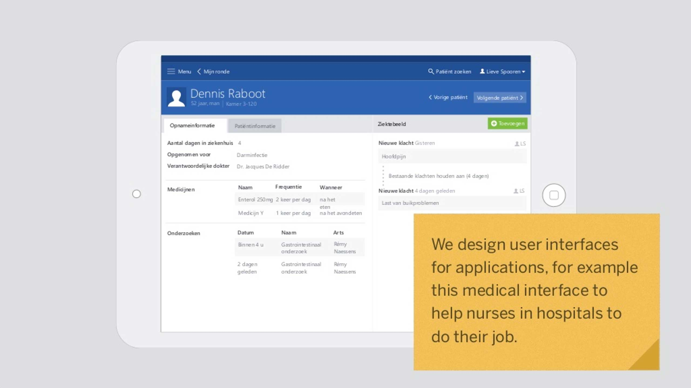

The display of these presentations was hand crafted by their authors. Part of the selling proposition of Keynote Extractor (KEX) is to automate part of the process of sharing a presentation.
New feature: Responsive Images
Date TBD 2017
There's a new feature in Keynote Extractor: responsive images. When you export your slides you have the option to activate the responsive images option.
This will optimize the exported slide images so there are 3 different versions: a small, medium and large version. Within the HTML we are using responsive images to provide a speedier page load and less bandwidth waste, especially on mobile.
New feature: XML export
Date TBD 2017
We've worked on a new feature. You can now export your slide content as XML. This way if you are a developer you can repurpose the content to do anything you want with it.
On slide sharing platforms
May 5th 2017
For years I put my slides on Slideshare. My account there is still up. I am quite proud of some of the presentations that have over 100 000 views.
But in a way it didn't feel right to put these presentations on an external site. Who is really profiting from my content? While at the moment there are no ads around my slides (presumably because of LinkedIn buying Slideshare), nothing prevents Slideshare from making a quick buck this way.
Then there was SpeakerDeck which I thought was nicer than Slideshare, but in a way it also felt like a bad experience. I see it's been bought by Github and it mostly seems in maintenance mode.
I realized what was bugging me wasn't really the slide sharing platforms themselves but the way they present the slides. A presentation is really a combination of text and images. If you follow the presentation zen style of delivery, you're going to end up with some pretty minimal slides. The content is really in the presenter's explanation. The slides are just supporting images. Too often I'd tried to make some sense out of someone's slides when they weren't meant to be viewed separately from the talk itself.
Video recording talks is a solution. This can be cool if the speaker is engaging and the video is great but so many things can go wrong here on a technical level. Also, you don't always want to sit through an hour of video just to reference a bit of content.
So I figured there must be a better way. One thing I experimented with was putting notes directly on my slides. If you check my presentations on SlideShare you'll see there are accompanying notes everywhere that basically complement the slide content.

Figure: A slide with a note on it. In the actual presentation the note was not shown.
This kind of works and was greatly appreciated, but it did give me a new task every time I gave a presentation: make an alternate version with the notes in it. It also messed with the layout of my slides. So it wasn't ideal.
A workflow for self-hosting your slides
May 5th 2017
So, you want to put your Keynote slides online? This blog post will show you how to do it.
If you already have your own web space, things are simple: you just upload the folder that you get when you extract your slides to your web server. Tada - your slides are online!
But what if you don't have webspace? Your own domain? Then you need to go ahead and find a solution.
There's tons of different ways to do this. In this tutorial I will explain how I would do it in different cases.
I am technically inclined and don't want to spend money. I don't care so much about the domain name.
Put the index.html and the images in an open source repository on a free Github account.
Activate Jekyll pages for that repository within the settings.
I use dnsimple to register domain names. Within dnsimple you can tie your domain name to your web space. There are tons of domain registrars out there - this is just one of them.
I want some web space.
I use WebFaction to register web space. Within webfaction you can create different 'apps'. These apps can be static websites but they can also run PHP etc. For me WebFaction is perfect, but they don't provide much in the way of "help" for beginners. If this is your first time putting anything online, I would recommend another service instead.